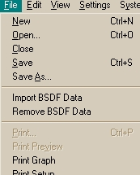
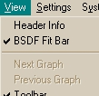
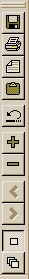

The BSDF Fit graph window includes dynamic ASAP menu commands, which appear when the BSDF fit window is open, as well as a toolbar, above the BSDF graph window, for quick access to common operation in Windows.
ASAP Dynamic Menu Commands for BSDF Fit
| File |  | |
| Open | Open file of type selected by user. | |
| Save | Saves file with default extension *.fit. | |
| Import BSDF Data | Imports a set of BSDF data from a data file (opens current Working Directory and pre-selects Files of Type BSDF). Multiple sets of BSDF data can be loaded. Each set consists of an in-plane scan measurement of the sample at a fixed angle of incidence. | |
| Remove BSDF Data | Removes the set of BSDF data that currently has focus. | |
| Next Graph | Move focus to next graph. | |
| Previous Graph | Return focus to previous graph. | |
| Edit | ||
| Copy Model to Clipboard | Copies the current model in focus to the Clipboard in the format of an ASAP MODELS definition, which can be pasted to an input file (*.inr). | |
| Undo Ctrl-Z | Undoes last change in the current model's parameters. | |
| View |  | |
| Header Information | Displays information from the header of the imported data file for the set of data that has focus. | |
| BSDF Fit Bar | See descriptions under "BSDF Fit Toolbar" below. | |
| Print Graph | Prints the current graph view. |
The Fit toolbar is located in the Graph Window (right panel of BSDF Fit window). Its default position is horizontally at the top. You can dock the toolbar either vertically to the left or right of the graph, or horizontally at the bottom, above the status bar.
|  |
Toolbar Tip: Save Saves current model data to a file with the default extension *.fit. Print Graph Prints the current graph view. Corresponds to File > Print Graph. View Header Info Opens a window that contains information for the data currently in focus. Corresponds to View > Header menu command. Copy Model to Clipboard Corresponds to Edit > Copy Model to Clipboard menu command. Undo Undoes last change to parameters (same as Ctr-Z). Add Data Corresponds to File > Import BSDF Data menu command Delete Data Corresponds to File > Remove BSDF Data menu command. Next Graph Changes view to the next open graph that represents a set of BSDF data. Corresponds to View > Next Graph menu command. Previous Graph Changes view to the previous available open graph. Corresponds to View > Previous Graph menu command. View One Graph Displays one set of data at a time in the graph window. Overlay Graphs Displays all sets of data in one graph window. |